Transfigured Night
A night of experimental electronic music featuring live electronics, live coding, audio-visual works, new instruments.
Saturday 10th September 7pm
Get tickets
Participating Artists:
Ain Bailey, Alo Allik & Andrea Young featuring Sharon Chohi Kim and
Sara Sinclair Gomez, Christian Faubel, Harmergeddon, Jockel Liess, lil
data, xname
Artist’s bios:
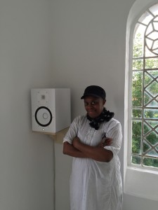
Ain Bailey is a sound artist and dj. Her compositions
encompass diverse mediums, such as field recordings and found sounds,
which are inspired by ideas and reflections on silence and absence,
architectural urban spaces, and feminist activism. Her electroacoustic
compositions are created for a variety of forms, including multichannel
and mixed media installations, moving image soundtracks, live
performance and dance.
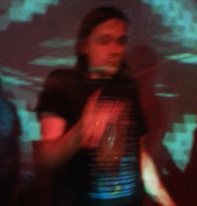
Alo Allik is a sound artist who has performed his
audiovisual works, electroacoustic compositions, eclectic DJ sets and
live electronic music throughout the world at a number of festivals,
including Transmediale, Piksel, ISEA, TodaysArt, ShinyToys, Pluto, NIME,
and many others. His aesthetically and geographically restless
lifestyle has enabled him to traverse a diverse range of musical worlds
including DJ-ing electronic dance music, live electronic jam sessions,
electroacoustic composition, free improvisation and audiovisual
performances. He has collaborated with a number of musicians and
artists, including Shelly Knotts, Andrea Young, xname, Satoshi
Shiraishi, Yota Morimoto, Keiko Uenishi, Michael Day, Simon Jermyn,
Shane Latimer, and Justin Carroll among others. In recent years he has
been actively participating in the Algorave movement developing a style
he describes as noisefunk which combines traditional rhythm patterns
with evolutionary synthesis algorithms. Currently, Alo works as a
researcher at the Centre for Digital Music, Queen Mary University of
London, while continuing to perform his music and visuals to audiences
worldwide.
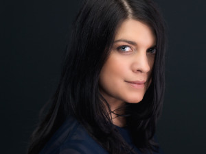
Andrea Young is a Canadian musician specializing in
experimental voice and live-electronics. She performs an acoustic,
amplified, processed and resynthesized voice, as well as a re-purposed
sound-controlling voice enabled through feature extraction and
data-driven live electronics. While her work relies on digital
innovation, her musical output relies on the integration of her digital
interface with analogue and re-purposed electronic media. She has
performed her work internationally at REDCAT and Automata, Los Angeles,
La Sala Rossa for Innovations en Concert, Montreal, Casino
Baumgarten and Espace Senghor for Kyma International Sound Symposiums in
Vienna and Brussels, The Emily Harvey Foundation, New York, as well as
during ICMC in Athens. Her research has been published in The Leonardo Music Journal and her performance of Agostino di Scipio’s Audible Ecosystemics No.3b was published by La Camera Verde.
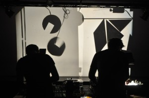
Christian Faubel is an interdisciplinary researcher and
artist. He is currently working at the laboratory for experimental
computer science within the Academy of Media Arts Cologne. He holds a
PhD in electrical engineering and has worked as a researcher on
autonomous systems and neurpscience at the Institute for Neural
Computation from 2002–2012. In 2002 he founded derstrudel, a
collective for the mediation of a relaxed approach to electronics
robotics. Since 2002 he has taught more than 50 workshops in
building simple analog robots at international venues and festivals.
Together with the artists Tina Tonagel and Ralf Schreiber he is
also part of the overhead projector band Ray Vibration. They use
overhead projectors, self build-instruments and analog robots for
creating audiovisual performances.
In his work he is interested in what enables autonomous behavior and how
complex autonomous behavior may result from the interaction of
very simple units and from the dynamics of interaction between such
units. In his artworks and performances he tries to convey insights
about theoretical concepts from psychology, neuroscience and
robotics such as emergence or embodiment along an aesthetic
dimension. He considers his artworks, workshops and performances to be
in the tradition of philosophical toys as they combine the
mediation of scientific concepts with pleasure and amusement.
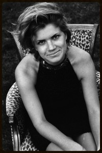
Sara Sinclair Gomez, as a mezzo-soprano who has thrived
in typically beautiful musical settings, performs repertoire
ranging from opera to chamber works, from the traditional to the
avant-garde, with the majority of her work focusing on the performance
of newly written and emerging music. She has performed 20th and 21st
classics such as Circles by Luciano Berio and From the Grammar of Dreams by
Kaija Saariaho. As a creative artist, her interests include challenging
beauty and developing the innate friction, disturbance, and ugliness
within.

Harmergeddon == Nathan + Fae Harmer || audio/visual
performance art duo living and working in London. They have been
collaborating since 2007 on a variety of mixed media art works and
officially formed Harmergeddon in 2010. From the unwanted, unheard and
unseen they create instruments, performances, sound pieces,
installations and videos. Their work resounds around atmospheric
and meditative soundscapes, forming kinetic pulses, drifting textures
and undulating drones. This is often set to highly manipulated visuals
and performance. Their live improvisations focus on the serendipitous
working with live electronics, obsolete consumer electronic devices and
the drifting periphery.
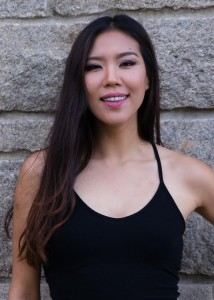
Sharon Chohi Kim is a voice artist, educator,
composer and avid collaborator based in Los Angeles. She is a dedicated
explorer of the sonic possibilities of the human voice and the countless
ways of applying them within such contexts as opera, contemporary,
experimental, electronic, and musical theatre. She was recently seen as
Lucha in Hopscotch with the highly acclaimed opera company The Industry, and as a vocalist in the West Coast Premiere of Sila: Breath of the World by John Luther Adams for the Ojai Music Festival. Sharon has performed at The Dorothy Chandler Pavilion, REDCAT, Walt Disney Hall, MOCA, Zipper Hall, Human Resources, the wulf, Glow Festival, Barndall Gallery Theater and The Machine Project, and has performed with such organizations as The Industry Opera Company, Dublab, Los Angeles Opera Company, ILK; Los Angeles; Spectrum, New York; El Paso Opera Company and
Chamizal National Memorial, Texas; and Jang Chun Art Hall and
Yeoungdeungpogu Theatre in Seoul, South Korea. She received an MFA
at California Institute of the Arts. Sharon is currently a member of the voice faculty at American Musical and Dramatic Academy in Hollywood, California.
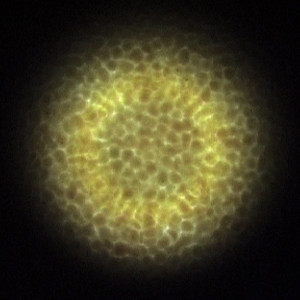
Jockel Liess creates generative audio-visual
compositions, which in its form and structure derive from artistic
traditions of visual and musical minimalism. In his mainly abstract
work, he explores ideas of micro tonality, structural composition,
synesthesia and interconnected sound/image relations.
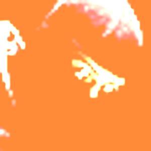
Lil data
data datadata data dataaaa
\ datadata data data data da
\ data data datadata datada
\ data datad data datdata a
\ datadatadatdatadatadatt
\ datad tadat datad dat ta
\ data dat adata adt a da
\_il data
xname
London based conceptual electronic artist from Milan (IT), she makes
performances and interactive installations. Her live compositions
transform light and other electromagnetic frequencies in sound waves
through self built synthesizers and complex semi chaotic machines.
http://xname.cc
Magnetic Attraction
An evening of music performed on the magnetic resonator piano by Kate
Ryder. The programme features pieces written especially for the
instrument and improvisations with Alice Eldridge (amplified cello)
and Roger Redgate (violin/fx pedal).
Wednesday 14th September 7.30pm
Get tickets
Pieces being performed:
- Magnetic études: Julia Adolphe
- 88MPH: Alexander Elliot Miller
- Gegenschein: Jeremy Cavaterra
- Movements from Secrets of Antikythera: Andrew McPherson
- Improvisations with Alice Eldridge (amplified cello) and Roger Redgate(violin/fx pedal)
About the artist:
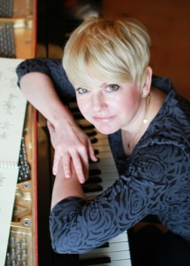
Kate Ryder’s wide ranging experience as a pianist
encompasses solo work and collaborations with leading performers and
ensembles in dance, electronics and theatre where she has established
herself as a versatile and original performer. She has had many works
created especially for her by composers in the UK and abroad. She
has a particular interest in working with extended techniques and
unusual keyboard instruments – toy pianos, antique keyboards and
prepared piano -incorporating them into her work through commissioning,
performing, recording and giving workshops on these unique instruments.
She has co-founded several ensembles with instrumentalists and sonic
artists where her performances have been described in the press as
“virtuosic” and “magical”.
She is currently Creativeworks Entrepreneur in Residence at Kingston
University, developing projects using new technologies and extended
techniques, and has previously held several prestigious residencies
including Visiting Artist at UC Berkeley (with harpsichordist Jane
Chapman), Brunel University, University of Bogotà, and Goldsmiths,
University of London. She recently took her projects – and instruments –
to festivals in Australia, Scandinavia and Russia and has curated
events at London’s South Bank Centre for their Massed Piano weekend, and
for the Cornelius Cardew Festival.
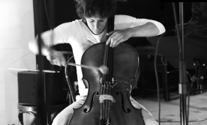
Alice Eldridge (amplified cello).
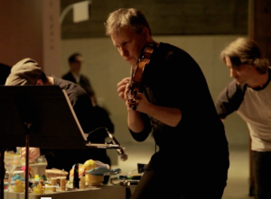
Roger Redgate (violin/fx pedal).
About the magnetic resonator piano:
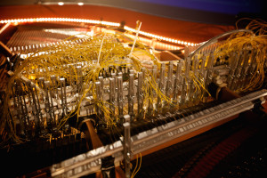
The magnetic resonator piano (MRP) is an electronically-augmented acoustic piano capable of eliciting new sounds acoustically
from the piano strings, without speakers. Electromagnets induce
vibrations in the strings independently of the hammers, creating
infinite sustain, crescendos, harmonics, pitch bends and new timbres,
all controlled from the piano keyboard. The MRP installs in any
grand piano and has been used in compositions, performances and
recordings internationally. Videos can be found below and on this page. The MRP was created by Andrew McPherson, Senior Lecturer in Digital Media at QMUL, electrical engineer and composer by training.
Closing Night
Featuring DJs playing a hip-shaking selection from the Open Music Archive.
Friday 16th September
Free to attend
About the DJs:
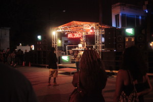
Ben White is an artist and researcher who works at the
intersection of art, music and information networks. He works in
collaboration with Eileen Simpson on the ongoing Open Music Archive,
a collaborative project to source, digitise and distribute
out-of-copyright archive recordings and a vehicle for collaborative
projects exploring the material’s potential for future reuse.
Recent projects include include: Auditory Learning for British Art Show 8 (2015-2016), Premonition 2037 (2016) for KALEIDOSCOPE at Modern Art Oxford, Local Recall at Hallé St Peter’s Manchester (2014), ATL 2067 for Flux Night Atlanta (2013), Open House: Divided Estates at Casa Luis Barragán / de_sitio Mexico City (2012), Parallel Anthology at the 17th Biennale of Sydney (2010), Free-to-air
at ICA London (2008) and Cornerhouse Manchester (2007). He is
currently a MAT PhD student based in the School of Electronic
Engineering and Computer Science at Queen Mary University of London.
www.openmusicarchive.org/projects
www.twitter.com/70revolutions